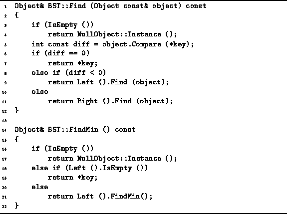
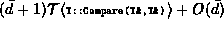
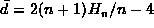
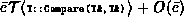
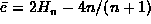

Data Structures and Algorithms
with Object-Oriented Design Patterns in C++
Data Structures and Algorithms
with Object-Oriented Design Patterns in C++
Program  gives the code for the Find member function
of the BST class.
The Find function takes as its lone argument a const reference
to an Object instance.
The purpose of the routine is to search the tree for an object
which matches the argument.
If a match is found, Find returns a reference to the matching object.
Otherwise, Find returns NullObject::Instance().
gives the code for the Find member function
of the BST class.
The Find function takes as its lone argument a const reference
to an Object instance.
The purpose of the routine is to search the tree for an object
which matches the argument.
If a match is found, Find returns a reference to the matching object.
Otherwise, Find returns NullObject::Instance().

Program: BST Class Find and FindMin Member Function Definitions
The recursive Find member function starts its search at the root and descends one level in the tree for each recursive call. At each level at most one object comparison is made (line 5). The worst case running time for a search is

where  is the time to compare two objects
and n is the number of internal nodes in the tree.
The same asymptotic running time applies for both successful
and unsuccessful searches.
is the time to compare two objects
and n is the number of internal nodes in the tree.
The same asymptotic running time applies for both successful
and unsuccessful searches.
The average running time for a successful search is
,
where  is the average depth
of an internal node in a binary search tree.
If  , the average time of a successful search is
, the average time of a successful search is  .
.
The average running time for an unsuccessful search is
,
where  is the average depth
of an external node in a binary search tree.
If  , the average time of an unsuccessful search is
, the average time of an unsuccessful search is  .
.
 Copyright © 1997 by Bruno R. Preiss, P.Eng. All rights reserved.
Copyright © 1997 by Bruno R. Preiss, P.Eng. All rights reserved.